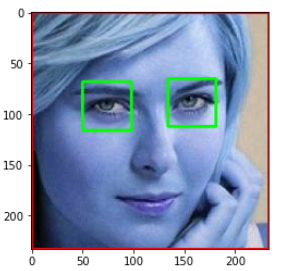
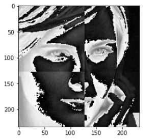

Created a tool that predicts the images of certain sports celebrities
Here the images has been cropped and resized and sorted in respective folders.


Here the data is split into train and tests sets with a test size of 30%. We tried four different
models and tuned them using GridSearchCV. We further evaluated them using Accuracy matrics.
The web server is built on flask API endpoint that was hosted on a local webserver. The API endpoint takes in a request as image and returns a prediction. Finally we gave it a form of a web application.